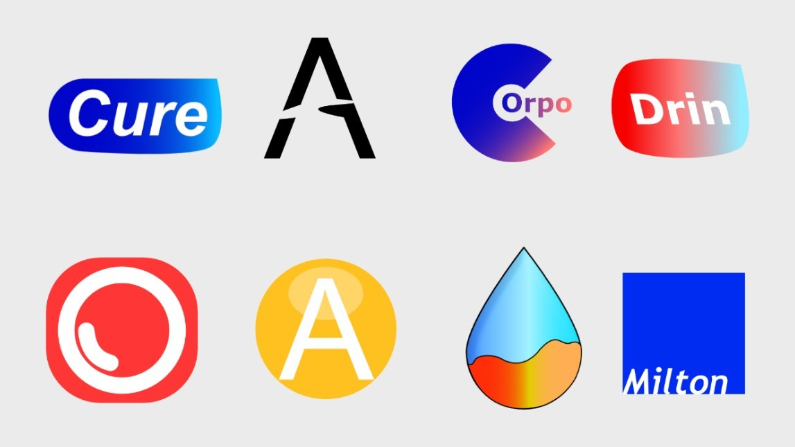
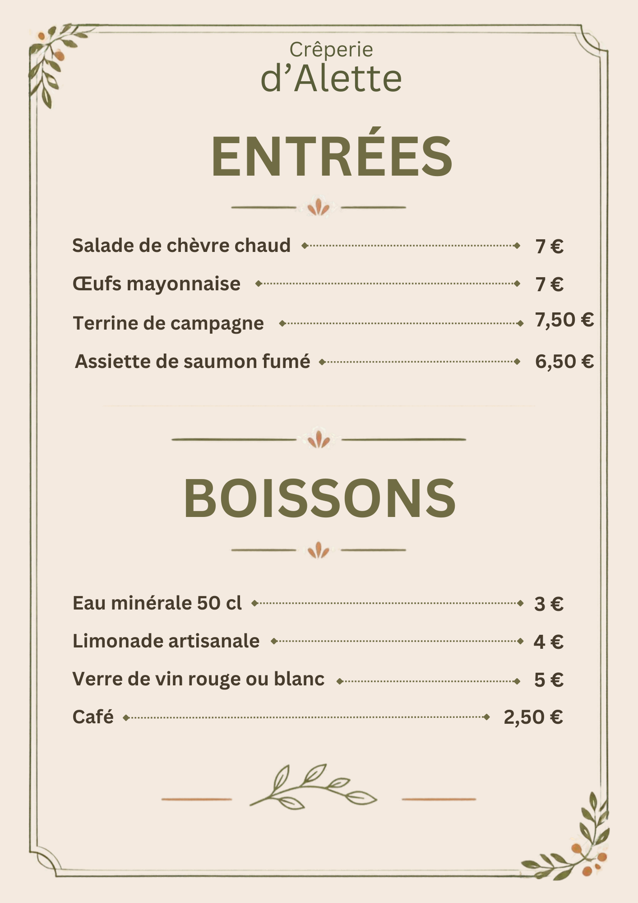
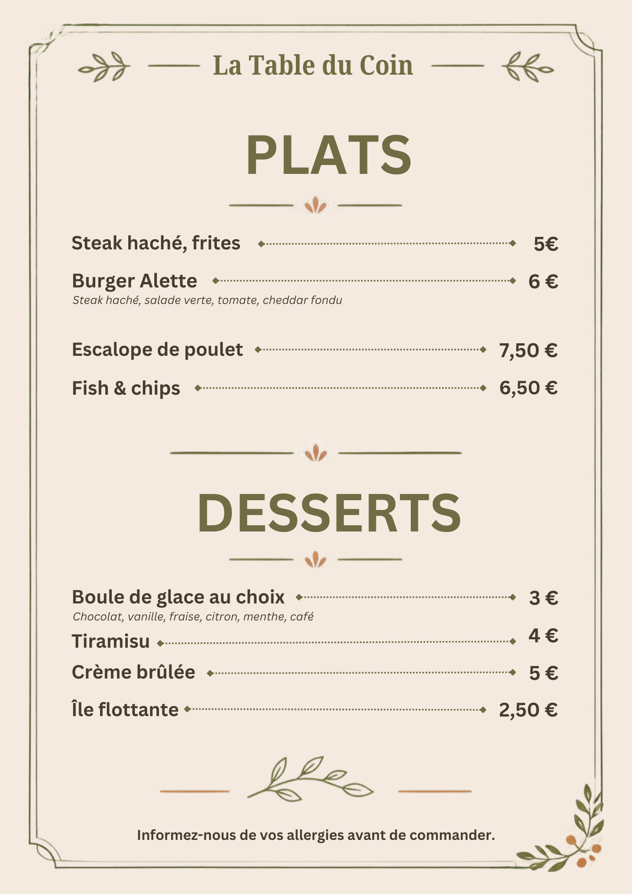

Graphisme
Miniatures, identités visuelles, menus et animations publicitaires : des formats différents, avec la même attention portée à la lisibilité et au détail.
Miniatures
Parcourez les visuels avec les flèches.
Logos
Un aperçu des identités visuelles réunies sur une même planche.

Menus de restaurants
Deux exemples de menus pensés pour être clairs et faciles à parcourir.

Menu 01

Menu 02
Animations publicitaires
Des animations simples pour votre marque.